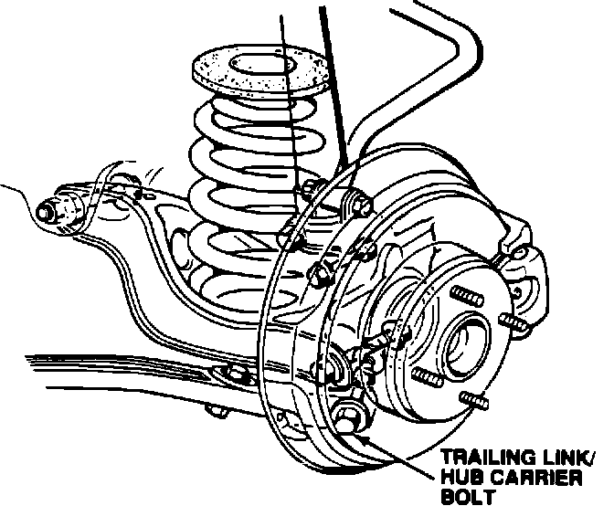

Tires - Noise after Rotating Rear to Front
89acura02YEAR MODEL
'86 - 88 LEGEND SEDAN
May 8, 1989
VIN APPLICATION BULLETIN NO.
ALL
89-007

Tire Noise
SYMPTOM Noticeable tire noise after rotating the rear tires to the front.
PROBABLE CAUSE
The rear toe setting will not stay within specification because of the trailing link/hub carrier bolt tolerances.
CORRECTIVE ACTION
Replace the existing trailing link/hub carrier bolts with stepped bolts that fit tighter (listed under PARTS INFORMATION), reset the rear toe, and re-rotate the tires.
PROCEDURE
1. Raise the rear of the car and support it on safety stands.
2. Remove the rear wheels, then remove the front section of each rear disc splash guard by removing the two 6 mm bolts.
3. Remove both trailing link/hub carrier bolts.
4. Beginning with the smallest diameter stepped bolt (pink), trial-fit each size bolt in each trailing arm and hub carrier. Select the bolts that fit the tightest, without having to be forced.
NOTE: If the trailing link/hub carrier washers do not fit the stepped up bolts used, install the washers iisted under PARTS INFORMATION.
5. After installing the bolts that fit the tightest, torque the self-locking nuts to 75 N-m (7.5 kg-m, 54 lb.ft.). Reinstall the splash guards and rotate the rear tires from side to side.
NOTE: If the rear tires were already rotated to the front, move them back to the rear, but to opposite sides of the car.
6. Reset the rear toe to 3.0 +/- 1.0 mm toe-in using the procedure in the Suspension section of the service manual.
NOTE: Exacty 3.0 mm toe-in is the optimum setting.
PARTS INFORMATION
Stepped Bolt, 12.05 mm (pink) P/N 52366-SD4-305
Stepped Bolt, 12.15 mm (yellow) P/N 52366-SD4-306
Stepped Bolt, 12.25 mm (white) P/N 52366-SD4-307
Washer, P/N 52364-SD4-305
NOTE: Order two of each bolt and four washers for the first car, then reorder as necessary to keep a complete set on hand.
WARRANTY CLAIM INFORMATION
This repair, like any repair performed after warranty expiration, may be eligible for goodwill consideration by the District Service Manager. You must request consideration, and get the DSM's decision, before starting work. Use the following claim information if DSM approval is received:
Operation number: 418172
Flat rate time: 1.2 hours (includes toe adjustment)
Failed P/N 52366-SD4-000
Defect code: 049
Contention code: B07